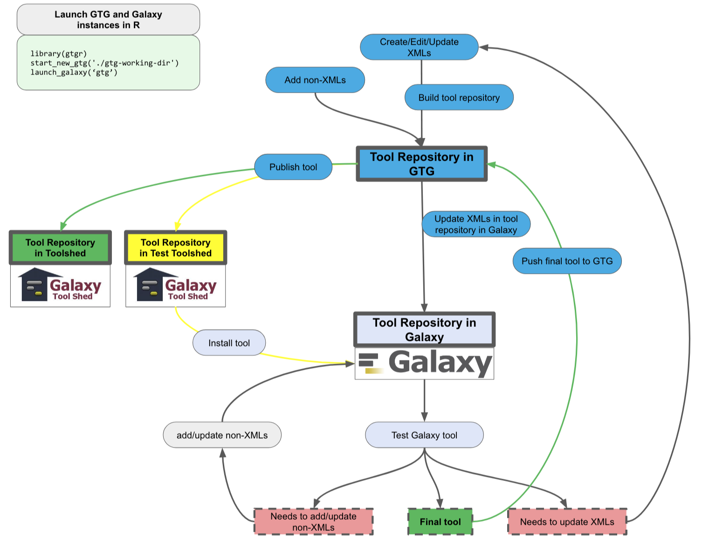

A Galaxy tool repository consists of one or more Galaxy tool XML files, and usually some non-XML files such as scripts and test datasets.
When using the GTG system to develop Galaxy tools, a Galaxy tool repository can be at different statuses according to its location:
We start Galaxy tool development by first creating some XML files in GTG. We then group these XML files and build a Galaxy tool repository from them. We can optionally add non-XML files into the tool repository. Then we publish the tool repository from GTG to the TEST Tool Shed. At this stage, it’s fine even if we don’t have a fully function tool repository. But it’s important to have the requirements section of each XML files well defined, since the requirements section defines tool dependencies which are required for the tool testing step.
{{% notice tip %}} To make best use of the GTG platform for developing Galaxy tools, following the development workflow below is recommended. {{% /notice %}}
